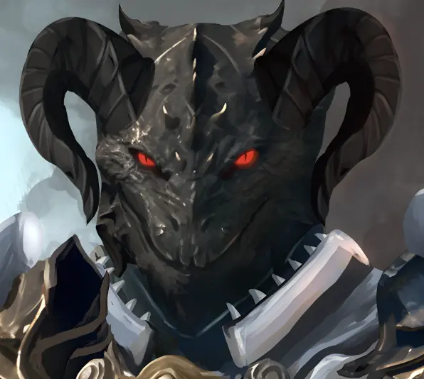

Diario de Aventuras & Recursos de Rol

¡Hola a todos y bienvenidos a mi rincón de aventuras! 🐉✨
Me llamo Blue, llevo 4 años jugando a D&D y me dedico apasionadamente al arte y, a veces, a la escritura.
Me encanta todo lo que rodea al universo de Dungeons & Dragons y por fin estoy planeando crear mi propia campaña.
Si te apasiona el rol tanto como a mí, ¡no dudes en explorar esta página y acompañarme en este viaje!
⚔️ Que tus aventuras estén llenas de magia, grandes historias y dados afortunados.
| Raza | Descripción | Rasgos Principales | Alineamiento |
|---|---|---|---|
| Dracónidos | Orgullosos descendientes de dragones, llevan el honor de sus clanes escrito en sus escamas y el aliento elemental en sus pulmones. | Aliento elemental, Resistencia al daño, Fuerza heráldica. | Bueno / Leal |
| Humanos | La raza más adaptable y ambiciosa entre las conocidas, capaces de alcanzar la grandeza en cualquier disciplina. | Versatilidad extrema, Adaptabilidad, Capacidad de mando. | Cualquiera |
| Elfos | Seres mágicos de longevidad milenaria, conectados con la naturaleza, el arte y los misterios arcanos. | Visión en la oscuridad, Sentidos agudos, Trance místico. | Caótico / Bueno |
| Gnolls | Humanoides hienidos guiados por instintos feroces y un hambre insaciable. | Furia voraz, Visión nocturna, Mordisco letal. | Caótico / Maligno |
| Gnomos | Criaturas pequeñas llenas de entusiasmo, curiosidad y talento para las ilusiones y la invención. | Astucia gnómica, Ilusión natural, Mente aguda. | Bueno / Neutral |
| Goblins | Astutos y escurridizos, sobreviven en entornos hostiles mediante emboscadas e ingenio. | Escurridizo, Visión en la oscuridad, Ataque furioso. | Neutral / Caótico |
| Clase | Descripción | Atributo Principal |
|---|---|---|
| Bárbaro | Un guerrero feroz de trasfondo salvaje que puede entrar en una furia de combate. | Fuerza |
| Bardo | Un maestro de la magia inspiradora que utiliza música y palabras. | Carisma |
| Brujo | Un usuario de magia que obtiene sus poderes mediante un pacto. | Carisma |
| Clérigo | Un campeón sacerdotal que esgrime magia divina al servicio de una deidad. | Sabiduría |
| Druida | Un sacerdote de la Antigua Fe que adopta formas de bestias y canaliza la naturaleza. | Sabiduría |
| Explorador | Un guerrero de las tierras salvajes especializado en rastrear y cazar. | Destreza y Sabiduría |
| Guerrero | Un maestro del combate físico, experto en armas y armaduras. | Fuerza o Destreza |
| Hechicero | Un lanzador de conjuros que recurre a una magia innata. | Carisma |
| Mago | Un estudioso de las artes arcanas capaz de manipular la realidad. | Inteligencia |
| Monje | Un maestro de las artes marciales que utiliza la energía de su cuerpo. | Destreza y Sabiduría |
| Paladín | Un guerrero santo sujeto a un juramento sagrado. | Fuerza y Carisma |
| Pícaro | Un especialista en sigilo, astucia y ataques precisos. | Destreza |
Notas de sesión, mapas de batalla y estado del grupo para la campaña actual.
Ver NotasUna colección de hechizos personalizados e ítems mágicos creados para el grupo.
Ver Compendio